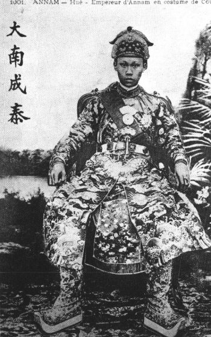

Ngày mồng một Tết ( 31 - 12 - 1889 ). Triều đình làm lễ chính thức tôn hoàng tử Bửu Lân lên địa vị Tân Quân
Vua Thành Thái ngồi trên ngai, chung quanh có hoàng thân, văn võ đình thần đứng chầu. Lúc các viên chức Pháp đến, vua ra khỏi điện, bước xuống gần để nghênh tiếp.
Vua mặc áo xanh, bịt khăn, đóng. Khi các viên chức Pháp đến, vua mới từ ngai vàng bước xuống, ra khỏi điện nghênh tiếp, có viên thái giám v cầm quạt lông theo hầu. Dáng điệu nhà vua đã tỏ ra người lớn.
Mồng hai Tết mới chính thức làm lễ đăng quang.
Sau khi một viên quan xướng " trung nghiêm ngoại chỉnh" vua Thành Thái đội mũ cửu long, mặc hoàng bào, mang đai ngọc, tay cầm trấn khuê ( 1 ) từ điện Cần Chánh bước lên kiệu, có quan quân theo hầu, ngự ra điện Thái hòa.
Mặc dù có một viên thái giám đi trước, hai tay nâng vạt áo lên, nhưng vì chiếc áo quá nặng, nhà vua bé nhỏ phải bước từng bước thật khó khăn.
Sau khi bắt tay viên Tổng Trú Sứ và những người tháp tùng, nhọc nhằn lắm vua mới leo lên được mấy tầng cấp để ngồi vào ngai vàng. Một viên quan xông trầm hương ngào ngạt. Bên ngoài 21 tiếng súng lệnh nổ vang, báo hiệu khởi sự lễ đăng quang.
Rheinard đọc chúc từ. Vua bước xuống ngai đứng nghe, đoạn đáp từ bằng chữ Hán viết vào thẻ ngà, giọng sang sảng giữa điện rồng.
( Miếng ngọc rồng bằng hai ngón tay, dài chừng hai tấc )
